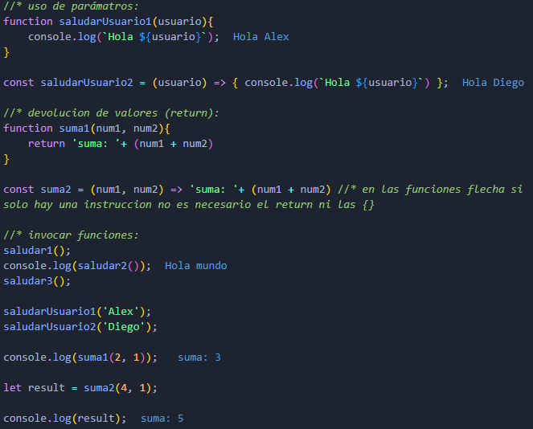

Es un paradigma de la programación que actualiza la forma de programar anterior (programación estructurada). Algunos de sus conceptos fundamentales son:
Clases:
Son plantillas/modelos sobre las cuales se pueden crear objetos nuevos. Estas inician con mayúsculas y deben tener una función constructor, la cual contiene los parámetros mínimos que necesita un objeto para existir y asi poder dar un estado inicial a los objetos creados a partir de la clase.
Propiedades:
Son los atributos o características de los objetos. Estas se definen tanto en los parámetros del constructor como dentro de la misma función para así inicializar los objetos. Tambien se pueden añadir propiedades que no esten en los parámetros pero siempre utilizando this para referenciar al objeto.
Métodos:
Se denomina métodos a las funciones asociadas a los comportamientos o acciones que realizan los objetos.
Objetos:
Son estructuras de datos que representan instancias de clases. Todos los objetos tienen propiedades o atributos y comportamientos y acciones representados por pares de clave: valor.
Para acceder a las propiedades y acciones del objeto se utiliza la nomeclatura del punto.
Crear objetos:
Hay varias maneras de crear objetos:
- Crear un objeto único declarandolo como una variable o constante.
- Creando un tipo de dato Object usando new. Se crea un objeto vacio y sus propiedades se van definiendo dinámicamente.
- Mediante clases usando new.

Agregar y eliminar propiedades en objetos:
- Para agregar una nueva propiedad solo se debe definirla mediante la nomeclatura del punto.
- Para eliminar una propiedad de un objeto se utiliza la palabra delete.
Funciones o métodos:
Son fragmentos de código reutilizable que se escriben para ejecutar una tarea y no volver a escribir el mismo código más de una vez.
- Primero se deben declarar y definir.
- Para utilizarlas se deben invocar.
- Deben realizar solo una tarea.
- Se pueden invocar todas las veces que se necesiten.
- Ayudan a modularizar el código.
- Pueden recibir parámetros (información de entrada).
- Pueden devolver valores (return).
- En JavaScript se pueden invocar funciones ya sea antes o después de que se declaren (hoisting).
Sintaxis:
Para declarar funciones hay varias sintaxis:
- Palabra reservada function:
- Se utiliza la palabra function, posteriormente el nombre de la función, luego paréntesis () los cuales pueden contener parámetros opcionales, y por último, el cuerpo de la función el cual es contenido con llaves {}.
- Funciones de tipo expresión o anónimas:
- Se declara una variable y se define igual a la palabra function, luego paréntesis () para los parámetros y luego el cuerpo de la función. La variable es el nombre de la función.
- Funciones de tipo Self Invoking:
- Este tipo de funciones no tienen nombre, no se declaran con ninguna variable y solo se invocan una sola vez dentro de si mismas. Se abren paréntesis dentro de los cuales se define de forma similar a las funciones anónimas, luego despues de dichos paréntesis se abren otros paréntesis para los argumentos de la función.
- Funciones flecha:
- Se define una constante igual a paréntesis para los parámetros, luego se agregan los simbolos => y posteriormente se define el cuerpo de la función.
Ejemplos de funciones:
